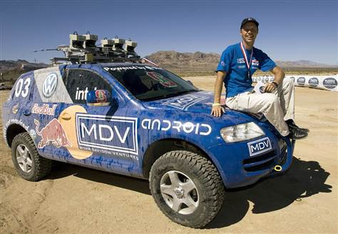

About a week ago I started looking into Sebastian Thrun, ex-head of Google X, a pioneer in self-driving cars and founder of Udacity.
At first, I thought he was just another CEO trying to make loads of money. but as I looked more into Sebastian and his history I got so inspired.
He started programming on a calculator when he was a kid. and used his passion to gain knowledge and genuinely try to solve problems.
He hopes that in the future we’ll all look at human-driven cars the same way we look at a kid learning to program on a calculator … with ridicule.
I learned a lot by exploring Sebastian’s journey. Here are my takeaways:
Don’t Fear Failure, Just Get Shit Done
Be the change you want to see in the world — Mahatma Gandhi
This is literally what Sebastian does. Anytime he sees something in the world that he wants to fix, he doesn’t wait around for other people to solve it, he acts on it and creates that change. If everyone waited around for other people to fix things, we’d all be sitting on our asses and nothing would get done.
He taught me that fear is such a barrier. There is literally no point in it. If you decide to something, the only thing fear can do is put doubt in your mind.
Every time I act on a fear, I feel disappointed in myself. I have a lot of fear. If I can quit all fear in my life and
all guilt, then I tend to be much, much more living up to my standards. I’ve never seen a person fail if they didn’t fear failure.
— Sebastian Thrun
Imagine if you did everything you wanted knowing you couldn’t fail. You would get so much more done. The only thing worth fearing is fear itself.
Sebastian achieved so much that he never could if he feared failure.
He pioneered self-driving cars, created one of the first widely taken online courses and is now leading the charge in flying cars. Everything he does has so much room for risk, but his ability to get past that fear is what helps lead him to success.
Money isn’t everything
A common trend I’ve seen with the world’s innovators like Elon Musk and Bill Gates is that they didn’t start their companies thinking: “how can I make the most money”. They put all their effort into solving the world’s problems, and the money followed.
Elon Musk helps the world head towards green energy and explore space, and Bill Gates helped bring computers into every household.
Sebastian has that same mentality. He suffered the loss of a friend to car crashes so he set out to solve that problem and he did! He was a pioneer of self-driving cars and he got to lead Google X. That’s pretty amazing.
He showed me that altruism isn’t a bad thing. Being selfless doesn’t always mean that you end up with nothing.
Even after he basically won life (not the board game) and was making all the money he needed, but he still stayed altruistic and went off to solve the next problem. He gave up 97% of his salary to pursue his dream of helping the world.
Question every assumption and go towards the problem, like the way they flew to the moon. We should have more moon shots and flights to the moon in areas of societal importance.
— Sebastian Thrun
Now he’s helping people all over the world get jobs at a fraction of the cost of a university degree. He’s employing teachers, educating the world, and supplying the world’s most innovative companies with the talent they need to advance the world’s technology and solve even more problems.
And of course, it doesn’t hurt that Udacity is a unicorn company worth over a billion dollars.
Education
Since I was a kid, I’ve always heard about Ivy League universities, like Harvard, Stanford, and MIT that carry a high reputation for being home to the world’s smartest people. Because of that, its been my dream to go to those universities, because that’ll mean that I’m one of “the world’s smartest people”.
But then I saw a YouTube video about Sebastian Thrun, and he completely changed the way I looked at education.
Sebastian first got into e-learning when he put one of his Stanford AI courses online. he went from teaching a class of 50 students to an online class of over 160 000 students.
What blew my mind is that over 400 of the top graduates from the course weren’t from Stanford.
Just think about that — Stanford does its best to choose the world’s smartest students, and there were people around the world just waiting to learn, who could do even better.
This got me woke about how lack of education is the only barrier that stops thousands of smart people around the world from doing amazing things.
Sebastian forever proved to me that you don’t have to go to an Ivy League university to be smart.
The university you go to doesn’t necessarily decide how smart you are.
10x Thinking
Sebastian is honestly such a good example of what it means to have 10x thinking. He looks at regular problems and finds creative solutions.
He wanted to save people around the world from dying on roads. Most people would say something like: increase the minimum age for a license or have stricter traffic laws.
He learns artificial intelligence and bam, he pioneers self-driving cars.

Sebastian wins the DARPA driver-less car competition
He got bored with that so now he’s just making them fly with his new company Kitty Hawk.
Then he sees smart people all over the world who need quality education and tech giants struggling to find good talent
He worked with companies co-create curriculum and bam — he creates Udacity nano-degrees — A $1000 way to get a job with certification.
· · ·
Another one of Sebastian’s ambitions is to help the world economy.
“I want to double the world’s GDP”
— Sebastian Thurn
When you think about ways to doubt the global GDP, I doubt creating an e-learning platform to educate the world comes to mind.
But Sebastian believes that spreading the availability of education is the way to do just that. And this makes so much sense to me.
The world is made up of people. People are what make things happen. There can’t be a positive change in the world in the world unless there is a change in the people that it is made of.
We can’t expect people to great things unless we give them the tools to do so, and education is the most powerful tool you can give anyone.
· · ·
If I can leave you with a final thought, it would be that the unconventional path leads to unconventional success.
You can’t change the world without a certain amount of healthy willingness to break the rules.
— Sebastian Thrun